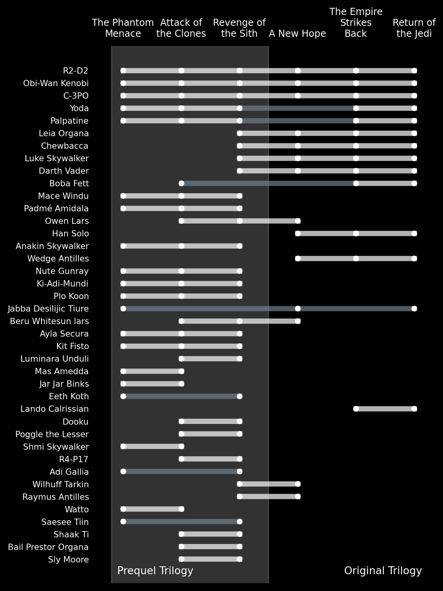
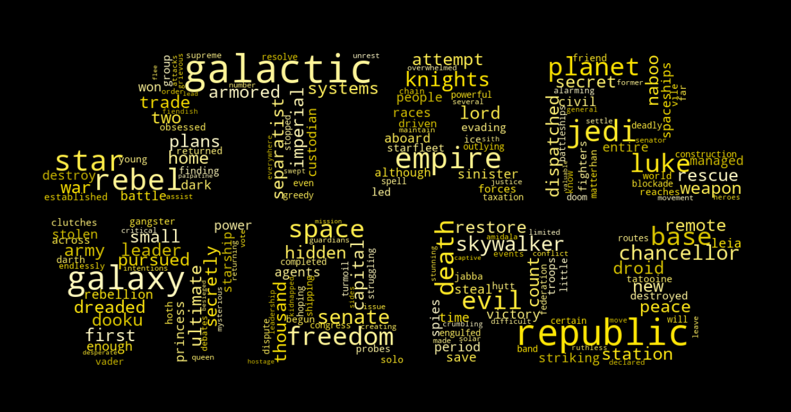
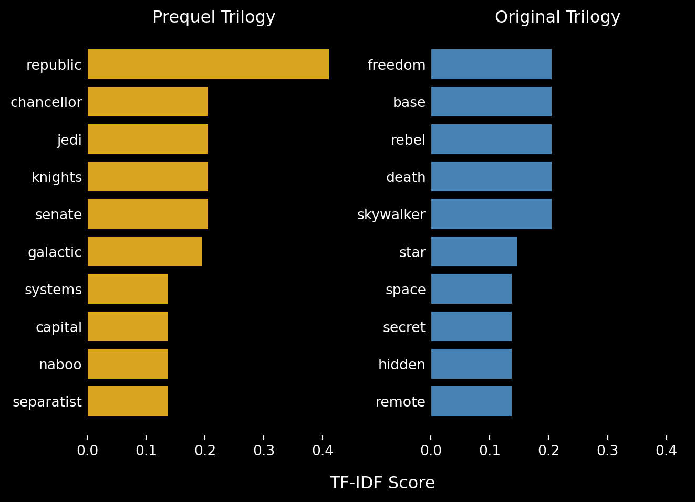

Analysis of Star Wars film data
The main Star Wars saga consists of three trilogies: the prequel trilogy, the original trilogy, and the sequel trilogy. Together, these are referred to as “the Skywalker Saga”. In the cinematic universe, the order of the trilogies is as above, but they were released in a different order. The original trilogy was released 1977-1983, the prequel trilogy in 1999-2005, and the sequel trilogy in 2015-2019.
The following analysis builds on the data from the SW API which covers the prequel trilogy and the original trilogy.
Character arcs of returning characters
The appearance of recurring characters in the different films.
Species representation
The Star Wars universe has a range of different species that are represented. The majority of these species can be classified as mammal. This is represented in the character gallery of the movies, where the majority of named characters in each movie is a mammal. This is particularly true in the original trilogy, where the only non-mammal named characters are the druids R2-D2 and C-3PO, and Jabba Desilijic Tiure, who is more commonly known as Jabba de Hutt, who belongs to the Hutt species (classification: gastropod).
Moreover, the following plot clearly shows a more numerous character gallery in the prequel trilogy, which was published later, compared with the original trilogy. The plot is interactive, so you can hover over the different data points to see a full list of named characters from that species class in that movie.
Species representation by main classification in the different movies shows more characters and more non-mammal characters in the prequel trilogy compared with the original trilogy
NLP analysis of the opening crawl
The Star Wars opening crawl is a signature device of the opening sequences of every numbered film of the Star Wars series, an American epic space opera franchise created by George Lucas. Within a black sky background featuring a smattering of stars, the crawl is preceded both by the opening static blue text, “A long time ago in a galaxy far, far away….” and by the Star Wars logo which recedes toward a central point on the screen before disappearing. The crawl text, which describes the backstory and context of the film, then recedes toward a higher point in relation to the screen and with an apparent effect of disappearing in the distance. 1

Digging more into the words used in the opening crawls shows differences between the prequel trilogy and the original trilogy. The most distinctive words in the prequel trilogy opening crawls reflect the key themes in the trilogy: the corruption of the Galactic Republic and its last chancellor, Sheev Palpatine. The most distinctive words in the original trilogy reflect the themes central in those movies: the quest for freedom by the Rebel Alliance and the central role of Luke Skywalker.
